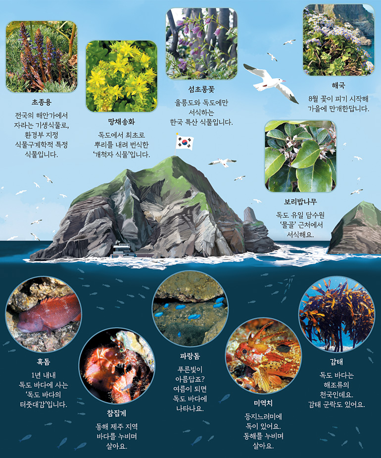
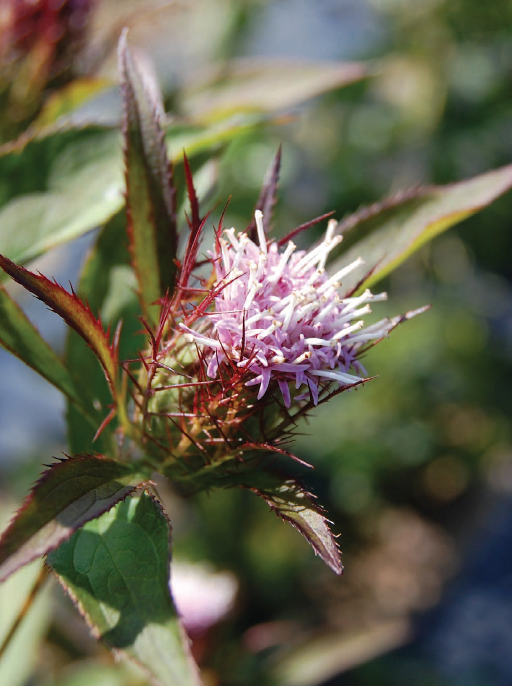
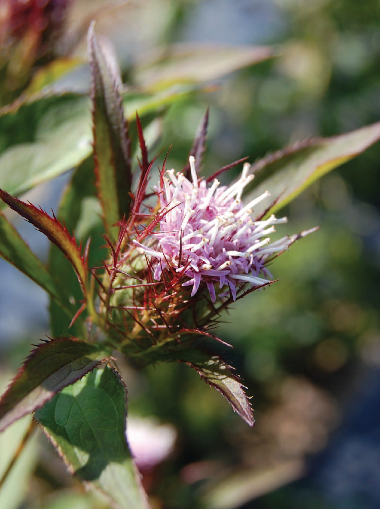

독도의 동식물
독도는 해양 생물과 조류의 서식지로서 중요한 역할을 하고 있습니다.
독도의 동물
조류
괭이갈매기: 독도에서 가장 많이 볼 수 있는 새로 주로 해안 절벽에서 서식합니다. 번식기에는 독도를 찾아와 둥지를 틉니다.
검은머리물떼새: 주로 바위 해안과 조간대에서 발견되며, 독도에서 번식하는 조류 중 하나입니다.
쇠제비갈매기: 독도에서 관찰되는 작은 갈매기로, 번식기에는 독도로 와서 번식합니다.
해양생물
명태: 독도 주변 해역에서 자주 볼 수 있는 어종입니다.
오징어: 독도의 해역에서 많이 잡히는 해양 생물 중 하나입니다.
해삼: 독도 주변 해역의 해저에 서식하며, 수산물로서도 중요한 가치를 지닙니다.
소라: 독도 해역에서 흔히 볼 수 있는 연체동물입니다.
독도의 식물
독도채송화: 독도의 대표적인 식물 중 하나로, 바위틈이나 해안가에서 자랍니다. 해풍과 염분에 강한 특성을 가지고 있습니다.
해국: 해안가에서 자라는 식물로, 독도의 염분이 많은 환경에서도 잘 자랍니다.
삽주: 독도에서 발견되는 풀 중 하나로, 해안가와 바위틈에서 자랍니다.
갯메꽃: 해안가의 모래와 자갈 사이에서 자라는 식물로, 독도의 해안 생태계에서 중요한 역할을 합니다.
 
